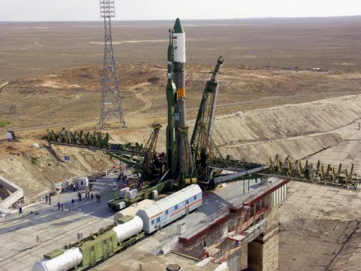
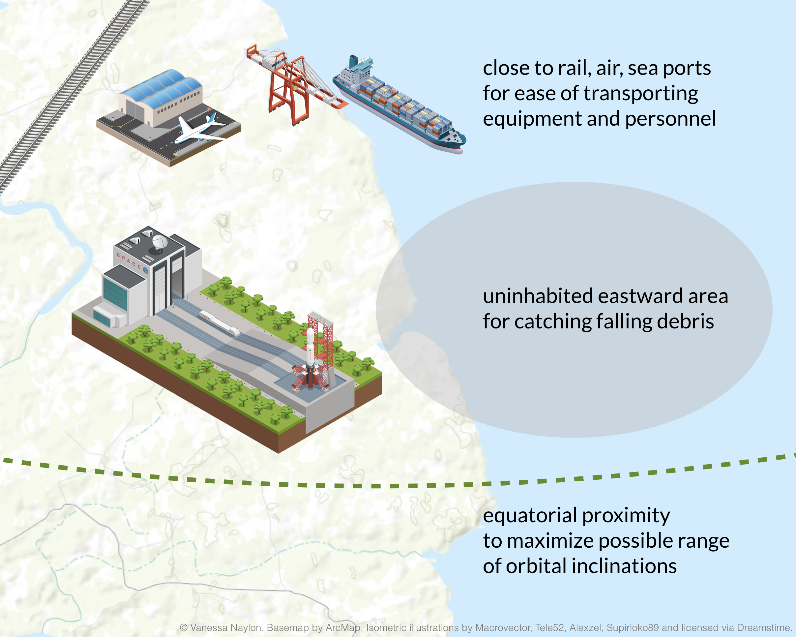
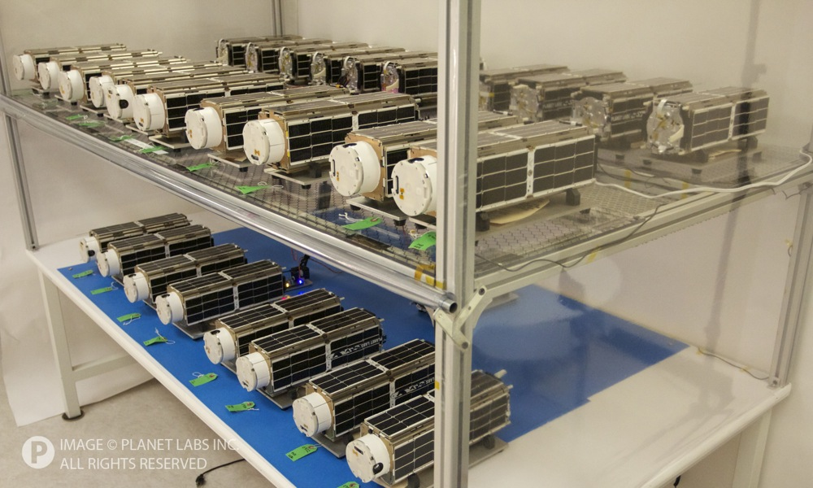

Use the slider to see where and when humans have built spaceports around the world. Sites with grey markers have been decommissioned. Green markers show sites still in use.
Notable spaceports

The oldest spaceport ever built is Baikonur Cosmodrome in Russia (see image), where Sputnik 1 launched. Baikonur is currently the only site for manned missions to ISS.
The world’s newest spaceports are Vostochny Cosmodrome in Russia and China Wenchang Spacecraft Launch Site near Hong Kong, both built in 2016.
The spaceport with the shortest tenure is either the US base at Omelek Island in Pacific Ocean or France’s Hammaguir French Special Weapons Test Centre in Algeria. Both lasted about 2 years.
IMO the most interesting mobile platform is Sea Launch Ocean Odyssey platform is a private commercial launch platform. It docks in Long Beach, California and travels 11 days to the equator to launch its payloads. Sea Launch was founded by a multinational consortium and was acquired by Russia’s S7 Airlines in December 2016.
Why might Italy and France build spaceports in Africa?
Building a spaceport a bit closer to the equator makes launches more flexible. Nascent French and Italian space agencies may also have initially expected that the necessary real estate for a spaceport would be easier to get in Africa. However, they might have suffered difficulties in transporting materials. Ultimately, France withdrew from its Algerian base in 1967 as part of the Evián Accords, and Italy allowed its Kenyan launch site to fall into disrepair in the 1990s.
Features of an Ideal Spaceport Location

If you were choosing a useful satellite launch site, you’d consider the need for transporting large items (like a railway to bring in a rocket from its place of manufacture). You’d want lots of room for debris like spent rockets to fall — and this area should be to the east, so your launch can take advantage of the earth’s west-to-east rotation. For bonus points, build your launch site closer to the equator; this will maximize your options for your satellite’s orbital inclination.
The spaceport most closely resembling this diagram is Alcântara Launch Center in Brazil, which satisfies the top requirements of a successful spaceport. Incidentally, Alcântara doesn’t show on the map above because they haven’t yet launched a satellite.
Why are satellites important?
Satellites are the commercial space industry’s most common launch payload. Unlike interplanetary probes and astronaut transport systems, satellites are small enough, functionally limited enough, and profitable enough for the commercial space sector to explore and develop.

Cubesats currently represent the newest and most economical form of satellite. They’re often used for imaging the earth and logistical monitoring. Farmers use infrared satellite images to assess field health and calculate crop yield. Satellite services help logistics companies track ship and plane positions at a useful frequency.
Some examples of companies currently using cubesats for global business intelligence:
Several companies will also be launching numerous satellites in the coming years to offer high-speed internet. For example, SpaceX recently filed with the FCC to operate a constellation of 4,425 new satellites (yet to be launched). OneWeb and Boeing are expected to launch similar constellations.
Credits
Map data is from Wikipedia and includes only sites that have launched satellites, excluding vessels like Russian submarines (insufficient geographic information available) and Pegasus spaceplanes (which have launched at multiple sites).
Thanks to Kendrick Taylor, Chris Bellew, and Schuyler Erle for their feedback.
Further reading
Want to read more about commercial space and long-term efforts to colonize the solar system? You might enjoy a couple posts on my main blog, Exit Strategy.